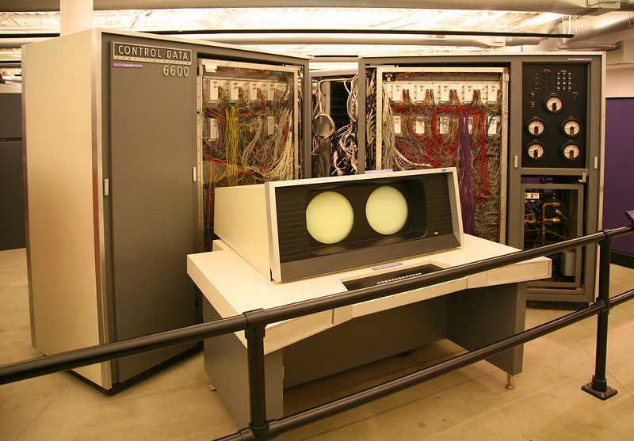
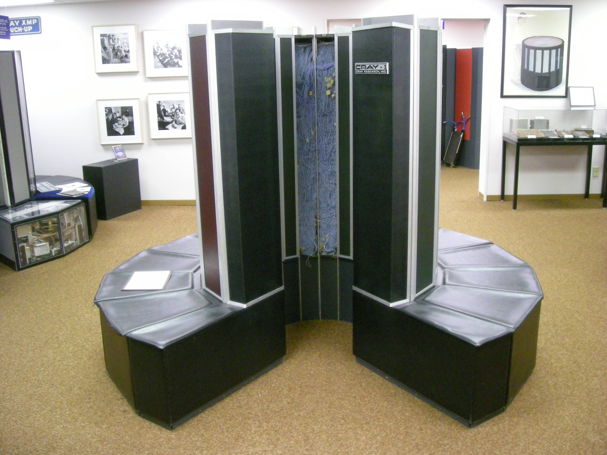
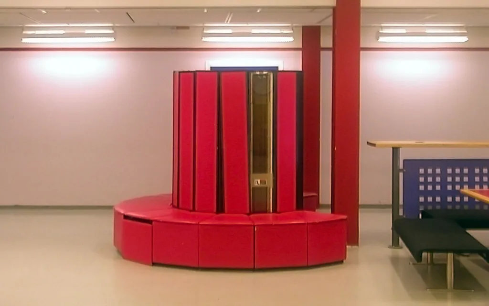

Le CDC 6600, est considéré le premier superordinateur et était l’ordinateur le plus rapide de son temps
Le Cray-1, utilisé pour applications scientifiques, fut vendu à des universités et au gouvernement, et encore l’ordinateur le plus rapide de son temps.
Le Cray X-MP, une des premières machines à utiliser des multiprocesseurs.